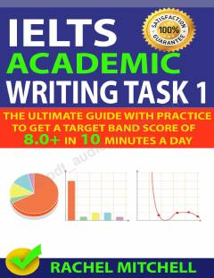

IAIELTS Academic Writing Task 1 imtihonidan yuqori ball olish uchun amaliy qo'llanma.
Ushbu qo'llanma IELTS Academic Writing Task 1 imtihonidan yuqori 8.0+ ball olishni maqsad qilgan o'quvchilar uchun mo'ljallangan bo'lib, amaliy tavsiyalar va namunalar taqdim etadi. Kitobda grafiklar, jadvallar va xaritalarni tasvirlash uchun zarur bo'lgan so'z boyligi, grammatik tuzilmalar va strategiyalar batafsil yoritilgan. Shuningdek, talabalar ko'p yo'l qo'yadigan xatolar tahlil qilinib, ularning oldini olish yo'llari ko'rsatib o'tilgan.